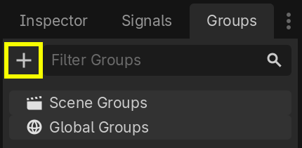
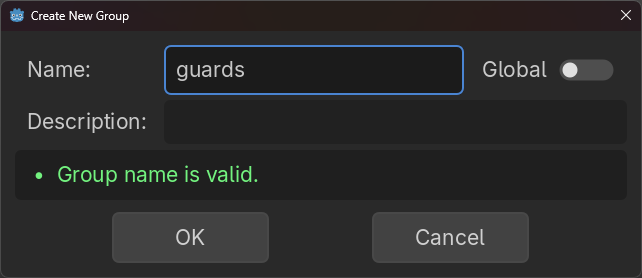
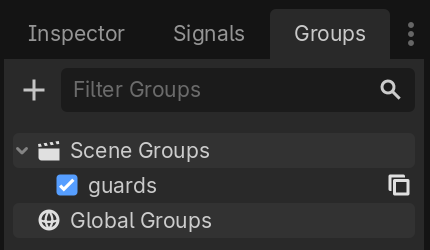
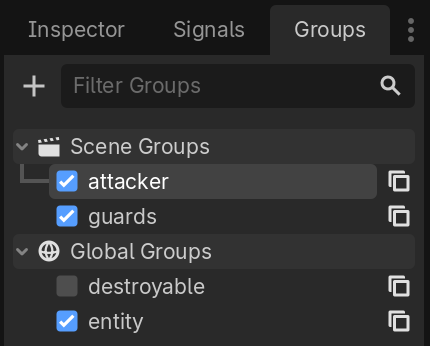
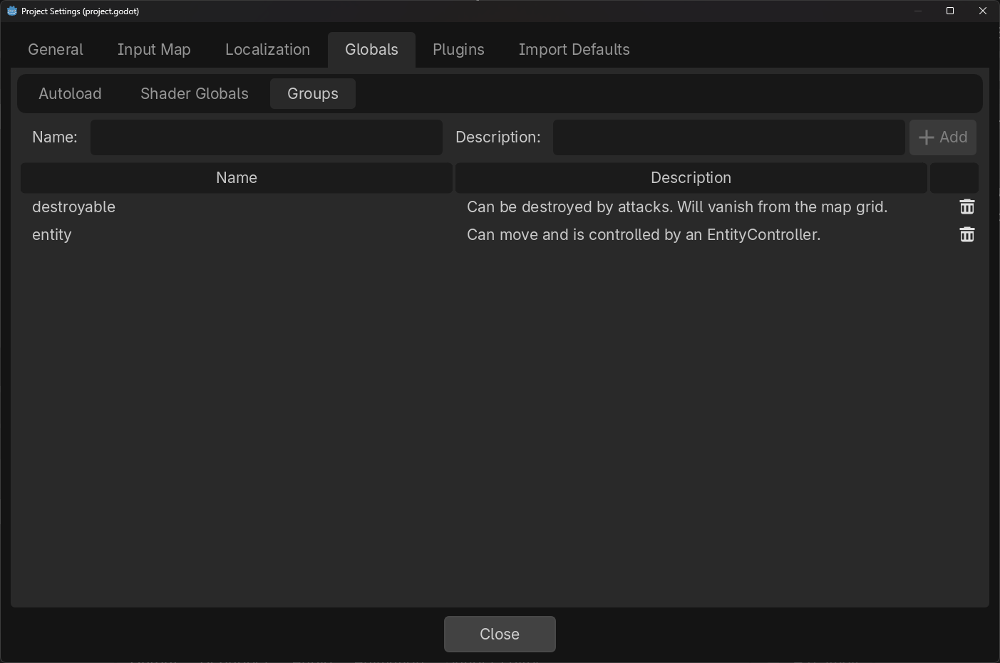

Nhóm
Group trong Godot hoạt động giống như tag trong các phần mềm khác. Bạn có thể thêm một node vào bao nhiêu group tùy thích. Sau đó, trong mã, bạn có thể dùng SceneTree để:
Lấy danh sách các node trong một group.
Gọi một phương thức trên tất cả node trong một group.
Gửi một notification đến tất cả node trong một group.
Đây là tính năng hữu ích để tổ chức các scene lớn và giảm sự phụ thuộc giữa các phần mã.
Quản lý group
Group được tạo bằng cách thêm một node vào một tên group mới, và tương tự, chúng bị xóa khi xóa tất cả node khỏi group đó.
Có hai cách để thêm/xóa node khỏi group:
Trong lúc thiết kế, bằng cách dùng Groups dock trong trình chỉnh sửa, hoặc tab Groups trong Globals dock của cài đặt dự án.
Trong lúc chạy, bằng cách gọi Node.add_to_group() hoặc Node.remove_from_group().
Mẹo
Dù không bắt buộc, bạn nên dùng quy ước đặt tên snake_case cho tên group.
Dùng Groups dock
Bạn có thể tạo group mới bằng Groups dock.

Chọn một node trong Scene dock rồi nhấp vào nút thêm có ký hiệu +.

Lúc này bạn sẽ thấy hộp thoại Create New Group xuất hiện. Hãy nhập tên group vào ô nhập.
Bạn có thể chọn tùy chọn "Global" nếu muốn, tùy chọn này khiến group hiển thị trên toàn dự án và có thể được dùng lại trong bất kỳ scene nào của dự án. Nó cũng cho phép bạn thêm mô tả cho group.
Khi xong, nhấn Ok để tạo group.

Bạn sẽ thấy các group mới xuất hiện trong Groups dock, dưới Scene Groups nếu tùy chọn Global không được chọn, hoặc dưới Global Groups nếu tùy chọn đó được chọn.
Một Node được chọn trong Scene dock có thể được thêm vào group bằng cách đánh dấu ô checkbox ở bên trái các group trong Groups dock. Node bạn đang chọn khi tạo group mới sẽ được tự động đánh dấu.

Tất cả group trong dự án được đánh dấu là Global, được tạo từ bất kỳ scene nào, sẽ hiển thị dưới Global Groups.
Mọi group khác lấy từ các node trong scene hiện tại sẽ xuất hiện dưới Scene Groups.
Cảnh báo
Cả group Global và Scene đều dùng cùng một logic bên dưới. Các group cùng tên được xem là một. Tính năng này hoàn toàn chỉ mang tính tổ chức.

Bạn có thể quản lý Global Groups trong tab Groups của Globals dock, bên trong Project Settings. Tại đó, bạn có thể thêm group toàn cục mới, hoặc đổi tên và mô tả của các group hiện có.

Sử dụng mã
Bạn cũng có thể quản lý group từ script. Đoạn mã sau thêm node mà bạn gắn script vào group guards ngay khi nó đi vào scene tree.
func _ready():
add_to_group("guards")
public override void _Ready()
{
base._Ready();
AddToGroup("guards");
}
Giả sử bạn đang làm một game xâm nhập. Khi một kẻ địch phát hiện người chơi, bạn muốn tất cả lính gác và robot chuyển sang trạng thái cảnh giác.
Trong ví dụ giả định dưới đây, ta dùng SceneTree.call_group() để báo động cho tất cả kẻ địch rằng người chơi đã bị phát hiện.
func _on_player_spotted():
get_tree().call_group("guards", "enter_alert_mode")
public void _OnPlayerDiscovered()
{
GetTree().CallGroup("guards", "enter_alert_mode");
}
Đoạn mã trên gọi hàm enter_alert_mode trên mọi thành viên của group guards.
Để lấy danh sách đầy đủ các node trong group guards dưới dạng mảng, bạn có thể gọi SceneTree.get_nodes_in_group():
var guards = get_tree().get_nodes_in_group("guards")
var guards = GetTree().GetNodesInGroup("guards");
Lớp SceneTree cung cấp nhiều phương thức hữu ích khác để tương tác với scene, cây phân cấp node của chúng và các group. Nó cho phép bạn dễ dàng chuyển scene hoặc nạp lại scene, thoát game hoặc tạm dừng và tiếp tục game. Nó cũng cung cấp các signal hữu ích.